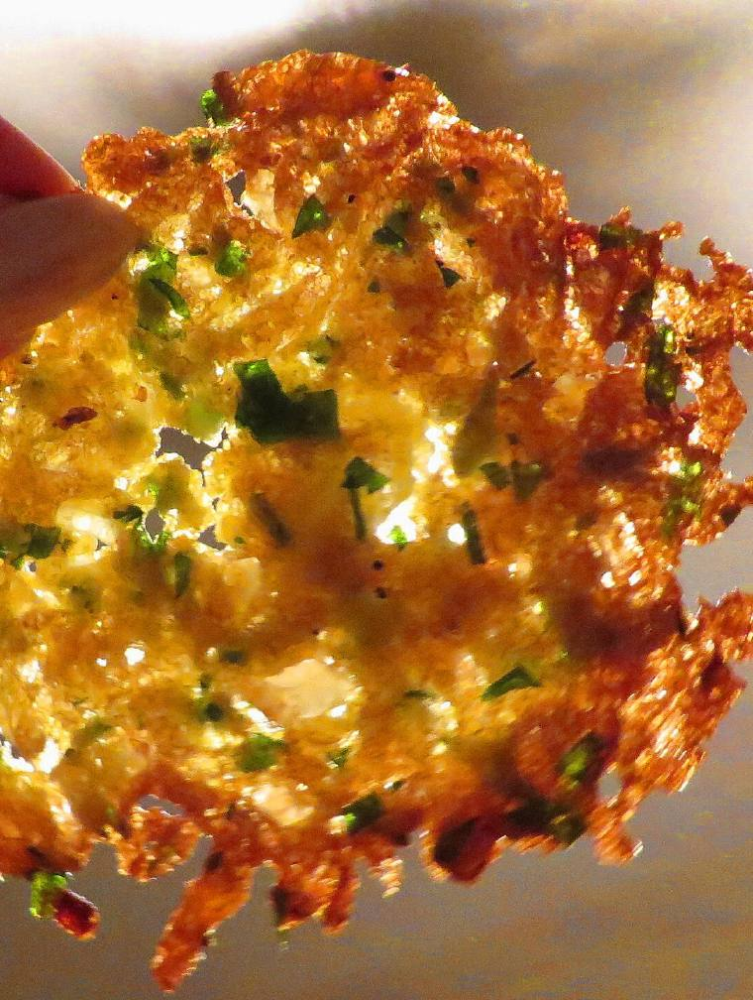

Entrées espagnoles et tapas

Entrées espagnoles et tapas
Tortillitas de camarones
Galettes de crevettes de Cadix
Préparation : 20 min
Cuisson : 20 min
Ingrédients (pour 6 personnes)
- 200 g de petites crevettes grises
- 500 g de farine de blé
- 1 petit oignon
- 10 cl de bière
- 1 brin de persil
- huile d’olive pour frire, sel
Quantités adaptées. Les temps de cuisson ne sont pas recalculés.
- Plonger les crevettes dans l’eau bouillante, les retirer à la reprise, garder et refroidir l’eau.
- Mêler farine, oignon et persil hachés fin, ajouter bière puis eau de cuisson jusqu’à une pâte très fluide.
- Incorporer les crevettes.
- Étaler par cuillerées dans l’huile très chaude, dorer des deux côtés, égoutter.
D’après Spain.info, office espagnol du tourisme. Traduit et reformulé.